01
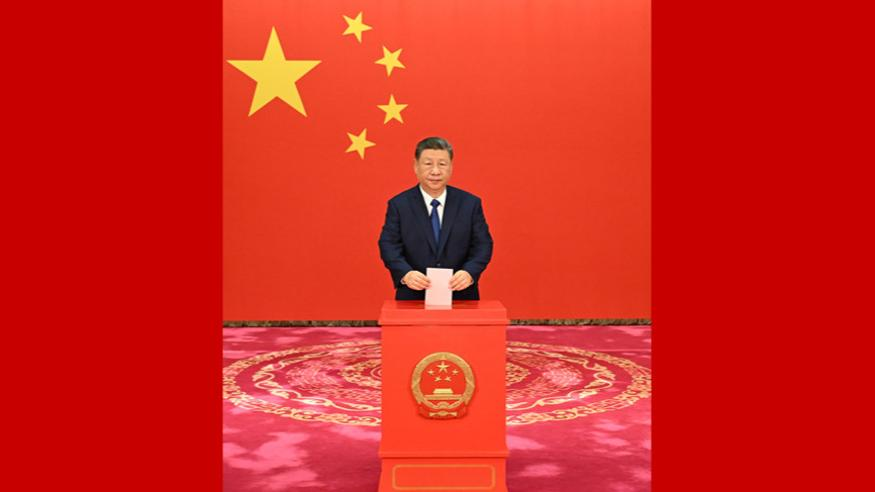
习近平在参加北京市区人大代表换届选举投票时强调 践行全过程人民民主 确保选出人民满意的代表
习近平在参加北京市区人大代表换届选举投票时强调践行全过程人民民主 确保选出人民满意的代表
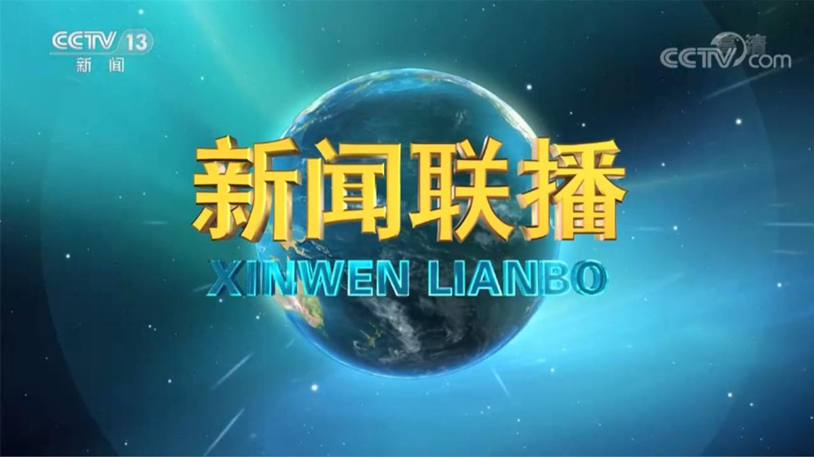

习近平在参加北京市区人大代表换届选举投票时强调践行全过程人民民主 确保选出人民满意的代表
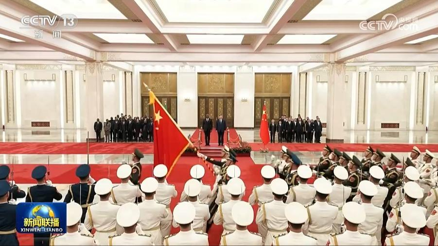
国家主席习近平6日下午在人民大会堂北大厅举行仪式，欢迎加蓬共和国总统布里斯·克洛泰尔·奥利吉·恩圭马对我国进行国事访问。
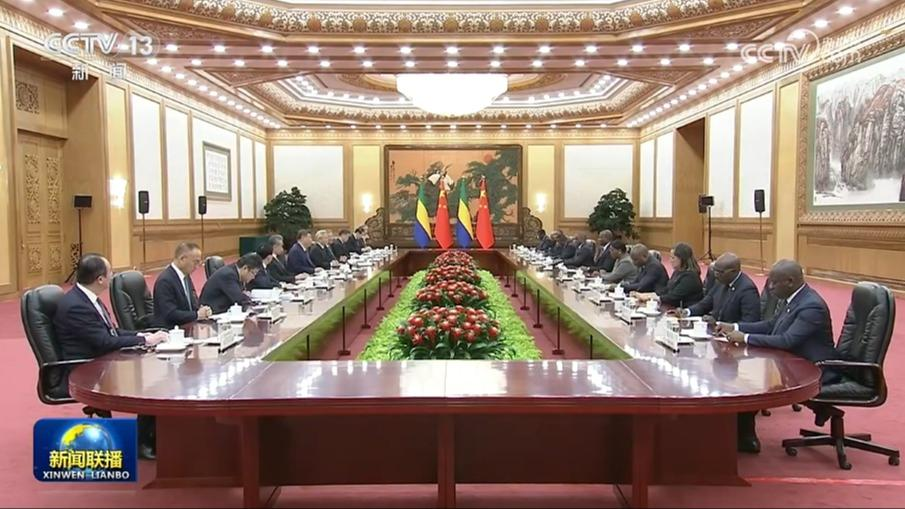
11月6日下午，国家主席习近平在北京人民大会堂同来华进行国事访问的加蓬总统恩圭马举行会谈。两国领导人共同宣布将双边关系定位提升为新时代中加命运共同体。
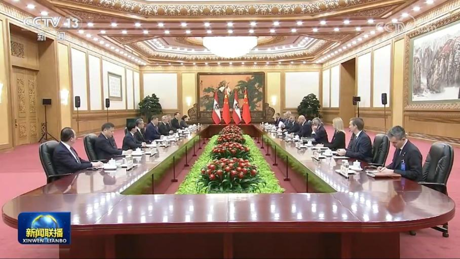
11月6日下午，国家主席习近平在北京人民大会堂会见来华进行正式访问的奥地利总理施托克尔。
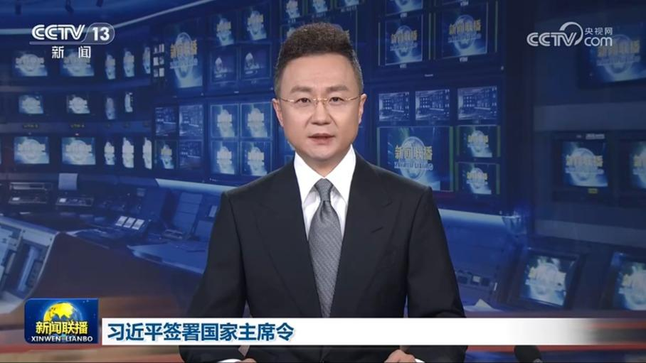
国家主席习近平11月6日签署第八十六号、第八十七号、第八十八号、第八十九号、第九十号、第九十一号主席令。
10月28日，国家主席习近平复信澳大利亚110名青年学生，鼓励他们继续积极参与中澳友好事业。
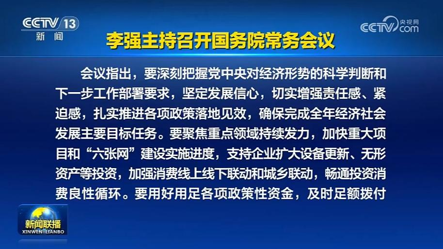
国务院总理李强11月6日主持召开国务院常务会议，学习贯彻习近平总书记关于前三季度经济形势和后几个月重点工作的重要讲话精神，听取社会救助工作情况汇报。
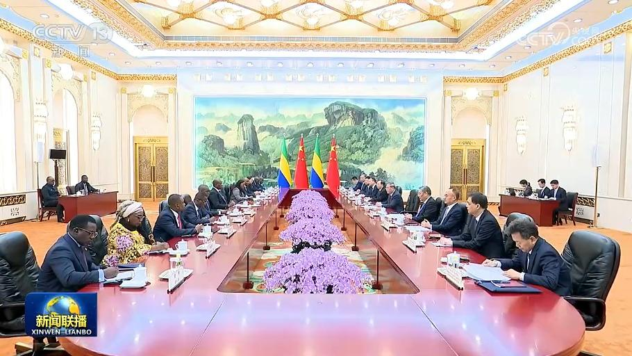
国务院总理李强6日在京会见来华进行国事访问的加蓬总统恩圭马。李强表示，中加建交以来，始终风雨同舟、守望相助，传统友谊历久弥坚。习近平主席同总统先生举行会谈，共同擘画两国关系发展新蓝图。中方愿同加方筑牢政治互信，深化矿业、农林渔业、数字经济、人文等领域合作，更好造福两国人民。……
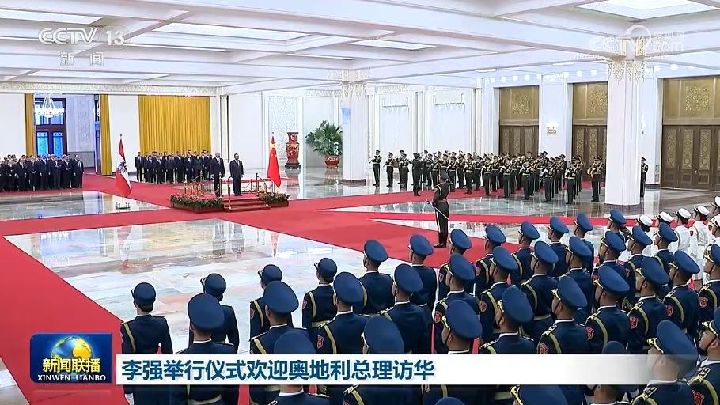
6日上午，国务院总理李强在北京人民大会堂举行仪式，欢迎奥地利总理施托克尔对我国进行正式访问。
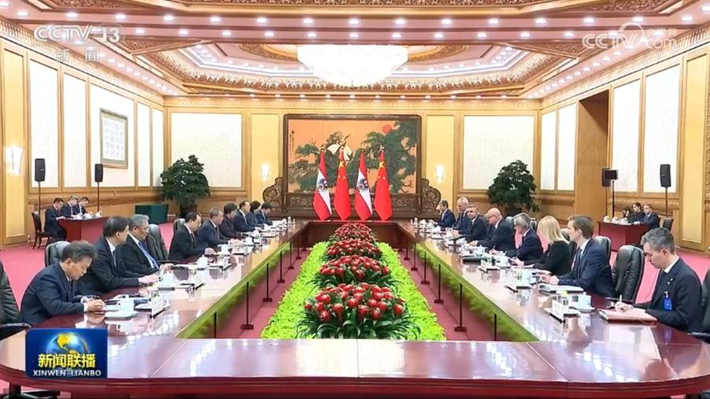
欢迎仪式后，李强同施托克尔举行会谈。李强表示，当前，受单边主义和保护主义抬头等影响，世界经济复苏艰难。中奥同为多边主义和自由贸易的支持者、受益者，应当坚定推进开放合作，为各自发展增添动力，也为世界经济注入正能量。习近平主席同总理先生举行会晤，就深化中奥关系与合作作出规划指引。中方愿同奥方加强对话沟通，尊重彼此核心利益和重大关切，拓展全方位合作，为两国人民带来更多实实在在的利益。
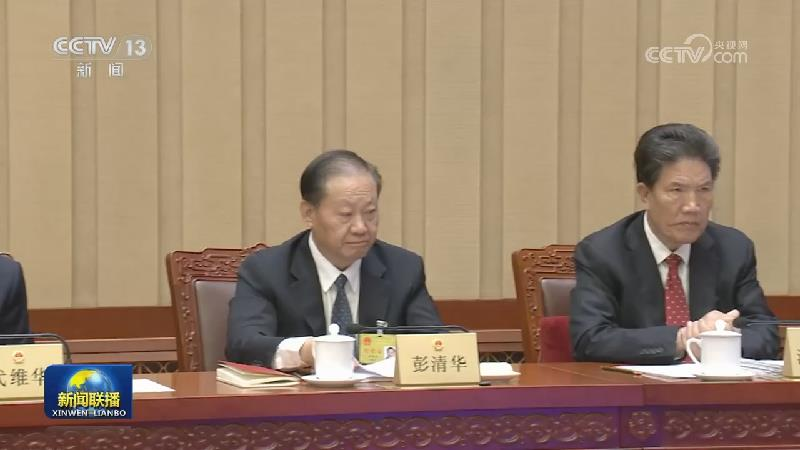
十四届全国人大常委会第二十五次会议6日上午在京闭幕。赵乐际委员长主持闭幕会。会议经表决，通过了检察公益诉讼法、南极活动与环境保护法、新修订的水法、反跨境腐败法、关于修改突发事件应对法等十五部法律的决定；决定免去李乐成的工业和信息化部部长职务。
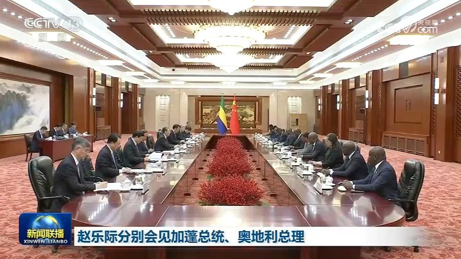
全国人大常委会委员长赵乐际6日下午在北京分别会见加蓬总统恩圭马、奥地利总理施托克尔。
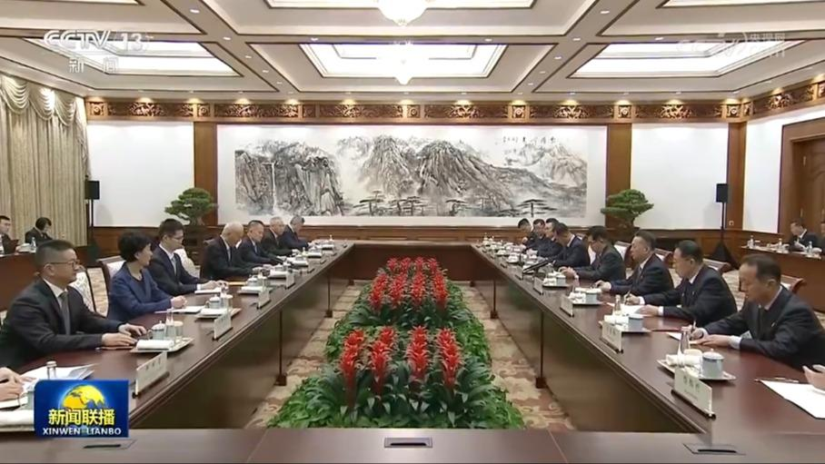
中共中央政治局常委、中央书记处书记蔡奇6日在京会见由朝鲜劳动党中央政治局委员、中央书记、国际部部长金成男率领的朝鲜劳动党代表团。
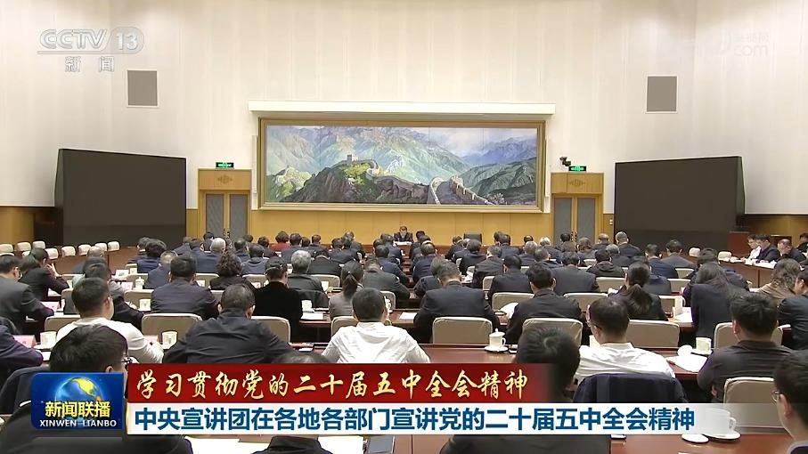
学习贯彻党的二十届五中全会精神中央宣讲团成员在各地各部门宣讲，并深入基层与干部群众互动交流，推动全会精神学习走深走实。
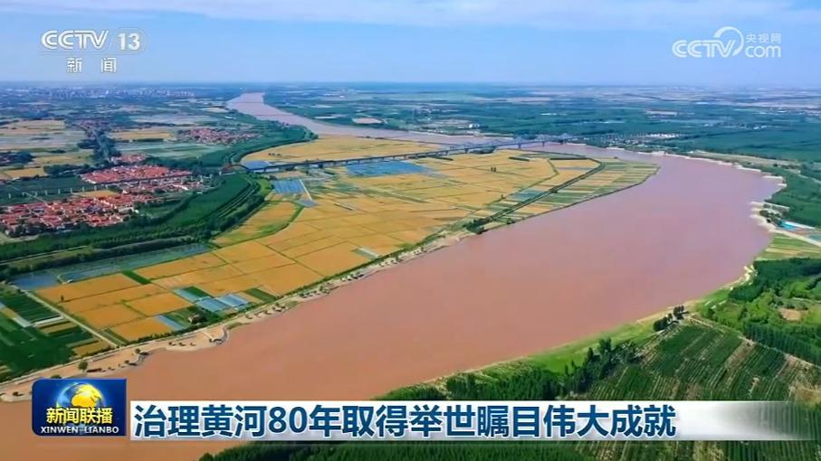
今天（11月6日），国务院新闻办公室举行新闻发布会，水利部有关负责人介绍说，党领导人民治理黄河80年，取得历史性成就、发生历史性变革。
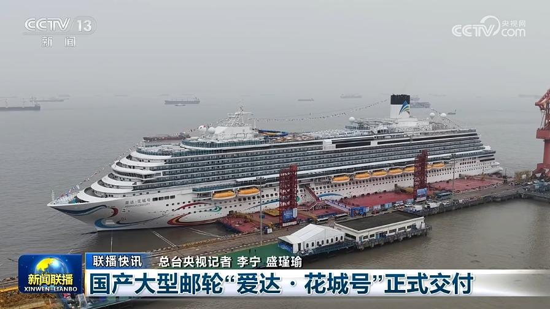
10月我国电商物流需求平稳 物流供给保障有力